From the family workshop in Colombia to bringing professional bicycle service to Abu Dhabi.
My name is Andrés Olarte. I'm 17 years old, and bicycles have been part of my life for much longer than they have been my profession.
I started working with bicycles at a very young age. What began as something I was passionate about slowly became my profession, and in 2019 I officially started working at Bicifull, my family's bicycle workshop in Cota, Colombia.
Bicifull was where I really learned what it means to work with bicycles.
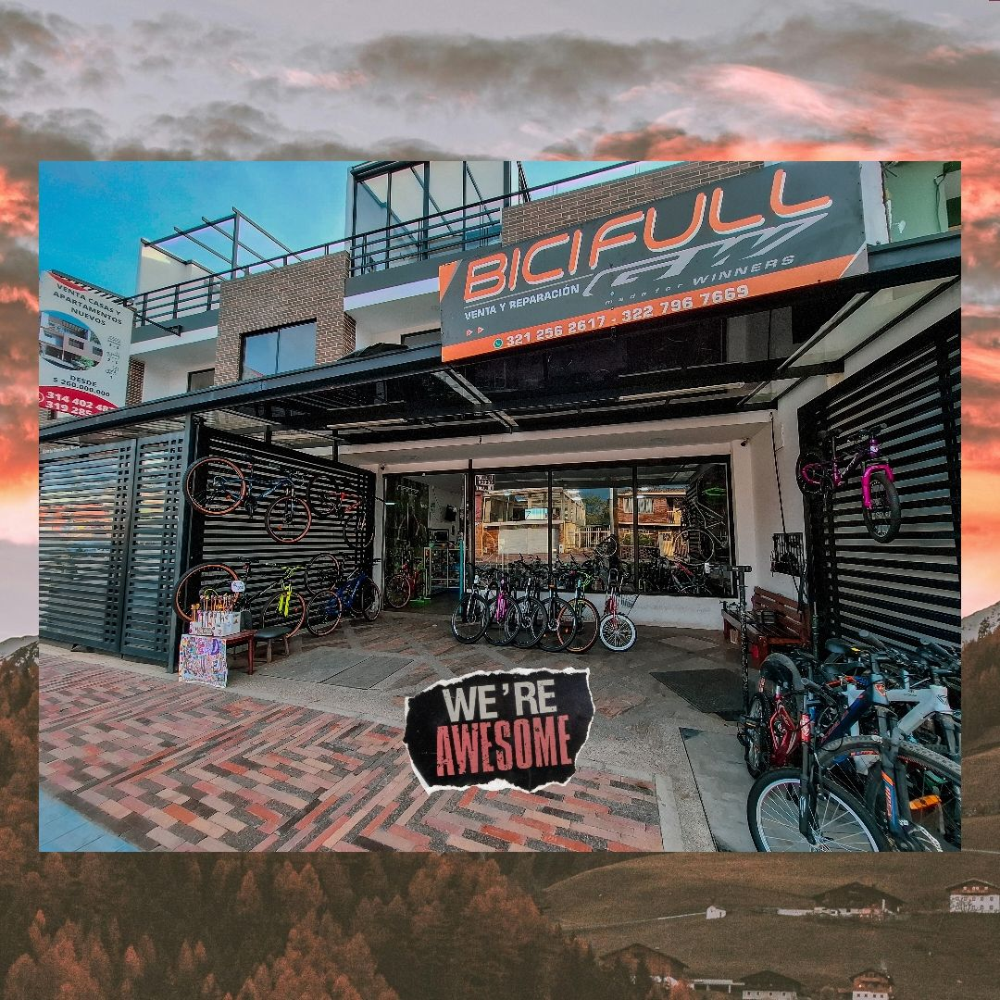
Over the years, I had the opportunity to work on all kinds of bikes — from everyday urban bicycles to high-end road and mountain bikes. I worked with drivetrains, hydraulic brakes, suspension systems, wheels, bearings, and precision adjustments.
But more importantly, I learned how to approach a bicycle.
I learned that every bike has a history, and that every mechanical problem has a reason behind it. A good mechanic shouldn't just replace a part because it looks worn or because that's what was done the last time. You have to understand what happened, diagnose the problem correctly, and find the right solution.
That way of thinking has stayed with me.
Learning beyond the workshop
As I gained experience at Bicifull, I also became increasingly interested in understanding the technical side of bicycles at a deeper level.
I completed professional training and certifications through organizations and programs including Park Tool Escola in Brazil, Shimano TEC, SRAM, Thiago Mecánico, and CIMA, and I also had the opportunity to attend the First International Congress of Professional Bicycle Mechanics, organized by AIMPB in Bogotá.
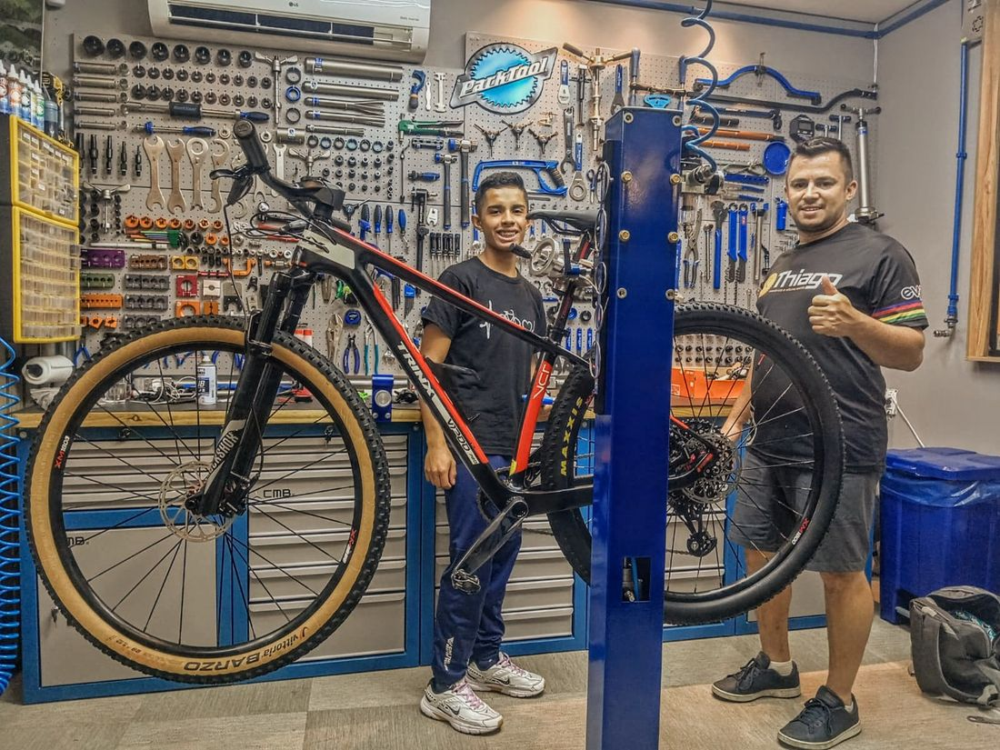
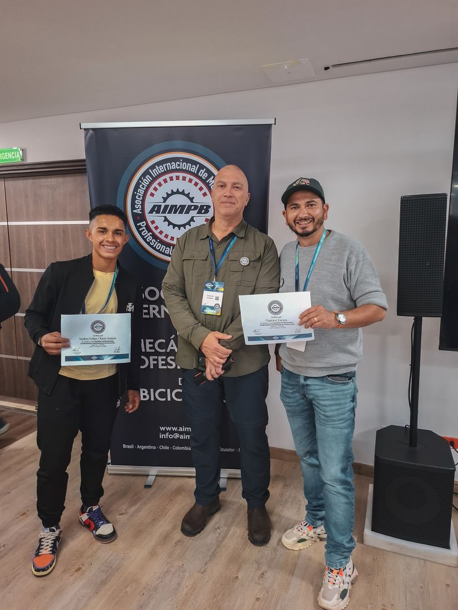
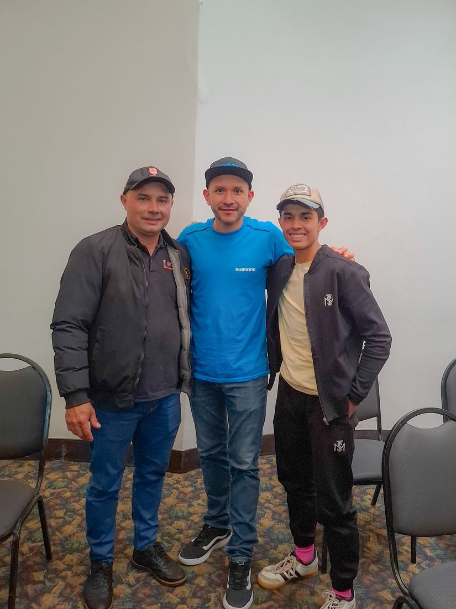
Training, certifications & the AIMPB congress in Bogotá →
At the same time, working in a family business taught me things that don't necessarily come from a technical course.
I was involved in customer service, sales, administration, and digital marketing. I learned how to talk to customers, understand what they actually needed, manage a business, and take responsibility for the work that leaves the workshop.
Bicifull wasn't just the place where I learned to fix bicycles.
It was where I started building my career.
Making bicycle mechanics easier to understand
At some point, I realized there were two things I really enjoyed: mechanics and communication.
So I started creating educational content under the name @olartemecanico. I began explaining bicycle technology, components, common problems, maintenance, diagnostics, and all those little things that many cyclists never get the chance to learn about.
My goal was never to make complicated videos just to sound technical. It was the opposite. I wanted to make bicycle mechanics easier to understand.
Today, that content has grown into a community of more than 17,000 cyclists and cycling enthusiasts across Instagram, TikTok, and YouTube.
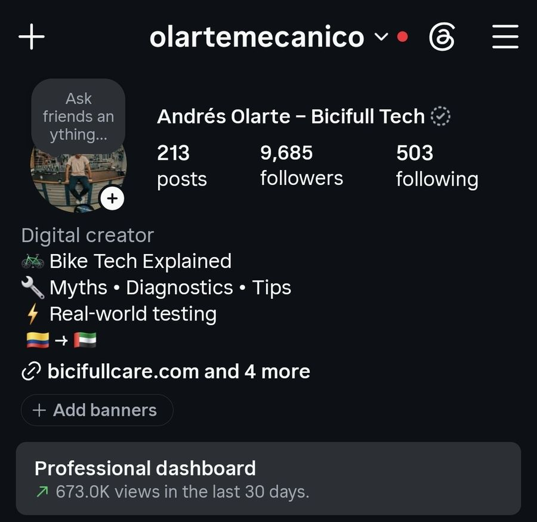
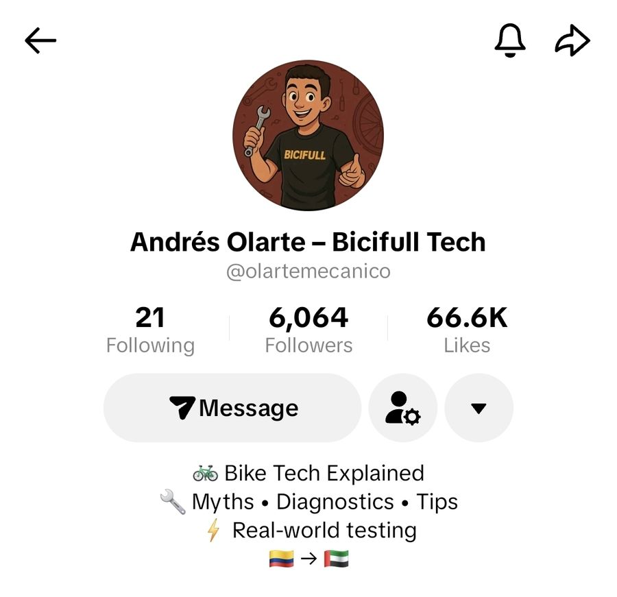
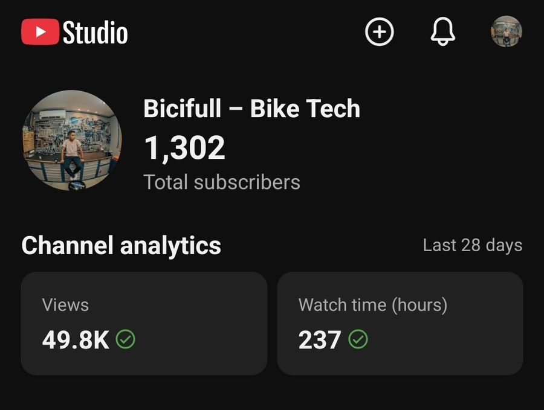
@olartemecanico across Instagram, TikTok & YouTube →
I talk about everything from Shimano and SRAM components to hydraulic brakes, suspension systems, strange noises, maintenance, diagnostics, and common cycling myths.
But one of the most valuable parts of creating content has been the conversations that come from it.
The questions people ask, the problems they share, and the experiences of other cyclists have taught me almost as much as working in the workshop. And they have reinforced something I already believed:
Cyclists don't just need someone who can fix a bicycle. They need someone they can trust.
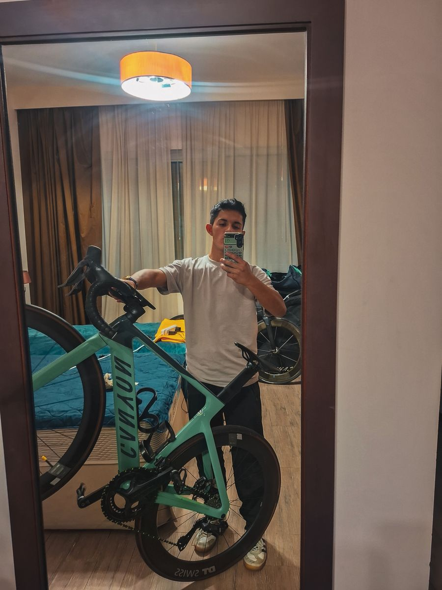
A new chapter in Abu Dhabi
After years of working in Colombia, I decided it was time to take what I had learned into a new environment.
I moved to the United Arab Emirates, and Abu Dhabi became the place where I wanted to begin the next chapter of my career.
That is where Bicifull Care comes in.
Bicifull Care was created from the experience I built at Bicifull in Colombia — the family business started by my father — with the idea of bringing that same level of care directly to cyclists here in Abu Dhabi.
Instead of having to find a workshop, transport your bicycle, wait for an available appointment, and then make another trip to pick it up, I bring the service to you.
Professional bicycle service, wherever your bike needs it.
My work focuses especially on detailed maintenance and diagnosis, including drivetrains, hydraulic braking systems, suspension forks, rear shocks, dropper posts, and other components found on high-performance mountain and road bikes.
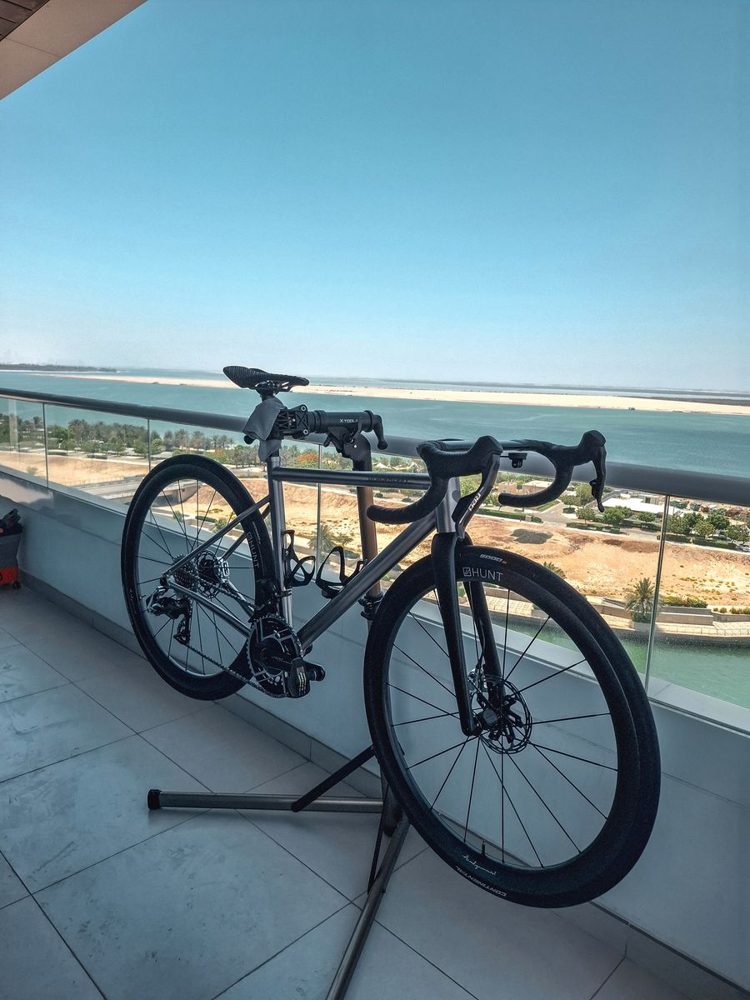
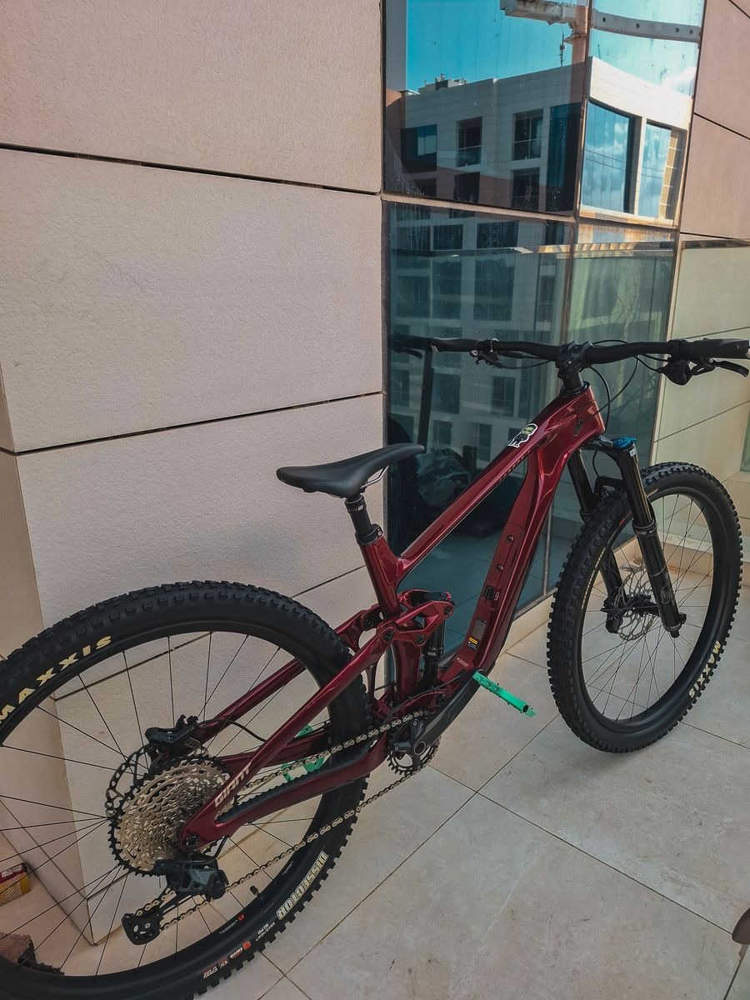
Home service, anywhere in Abu Dhabi
Bicifull Care is my way of taking what I learned in Colombia and building something of my own here in Abu Dhabi.
More than just fixing bicycles
Alongside my work as a bicycle mechanic, I also study Industrial Engineering. For me, that might seem like a completely different field, but I actually see a strong connection between the two.
Mechanics taught me how to work with my hands, diagnose problems, pay attention to details, and understand how things work. Engineering is teaching me to look at problems from another perspective — processes, efficiency, systems, customer experience, and how things can be improved.
And running a business has taught me that technical knowledge is only one part of the equation.
The combination of hands-on mechanical experience, engineering, business, and communication is what I want to bring to Bicifull Care.
I don't want to simply repair your bicycle. I want you to understand what your bike needs, why it needs it, and leave knowing that it has received the care it deserves.
Where it all started
Bicifull Care may be a new chapter, but its story didn't start in Abu Dhabi.
It started years ago in a family workshop in Cota, Colombia. It started with my father creating Bicifull, and with me growing up around bicycles, tools, customers, problems to solve, and the everyday reality of running a bicycle workshop.
That experience is still at the heart of everything I do.
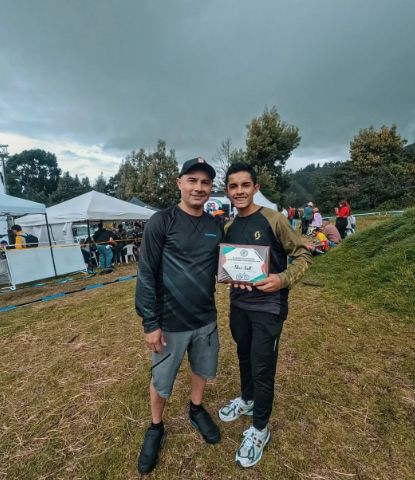
Now I'm taking that knowledge, experience, and passion with me to a new country and a new community of cyclists.
Mechanic. Educator. Future engineer. And above all, a cyclist who cares about doing things properly.
Welcome to Bicifull Care
Whether you ride to compete, explore, stay fit, commute, or simply because you love your bike, my goal is simple:
Professional bicycle maintenance and service, brought directly to your door in Abu Dhabi.